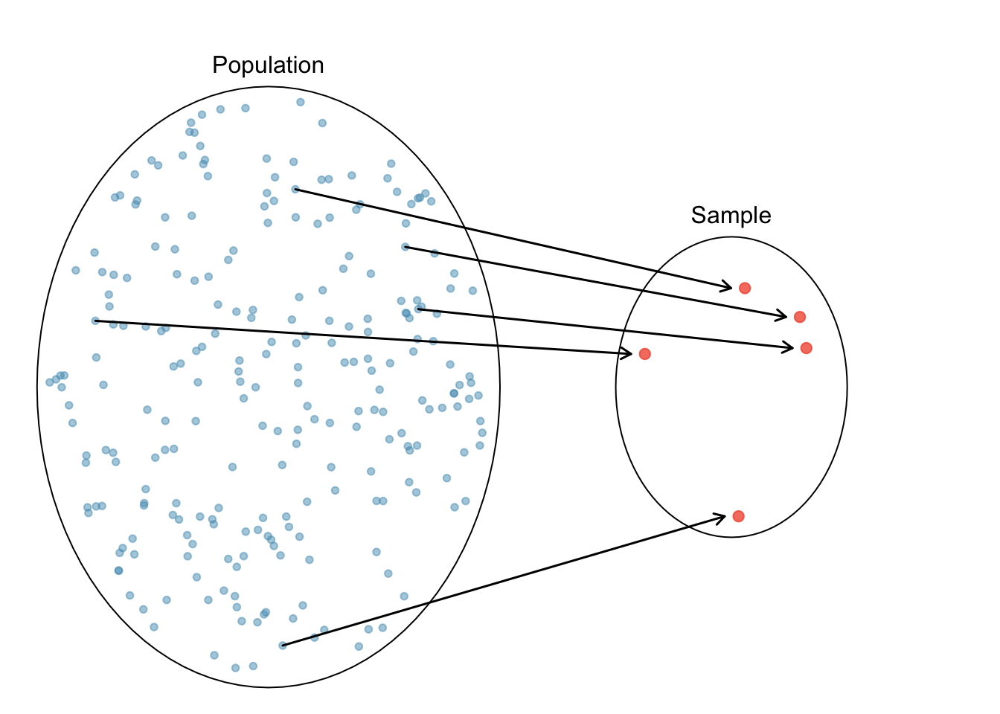
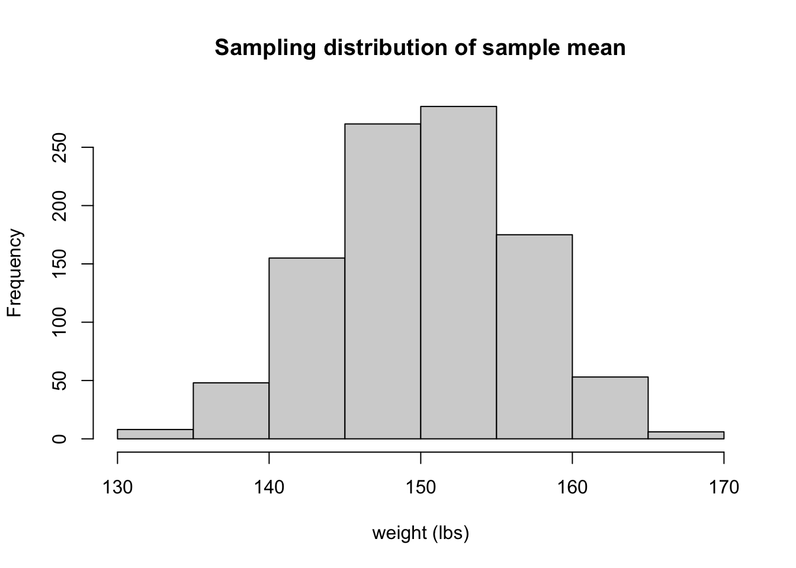
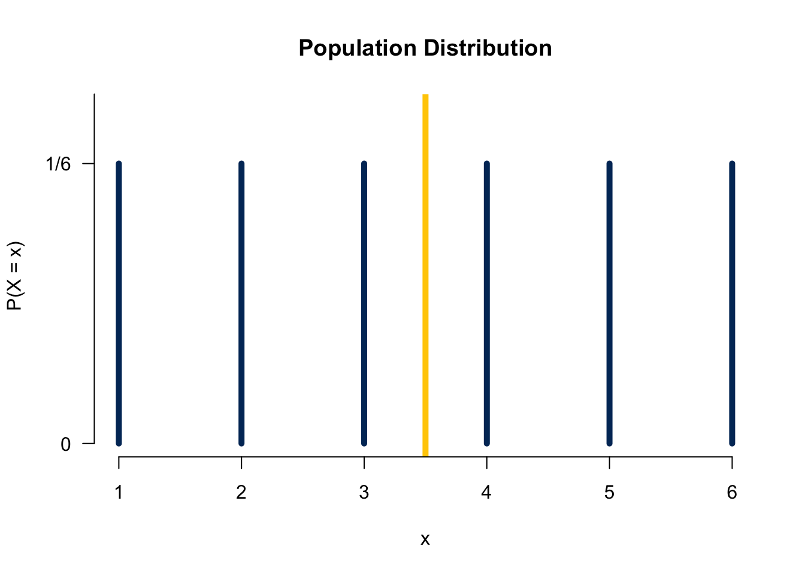
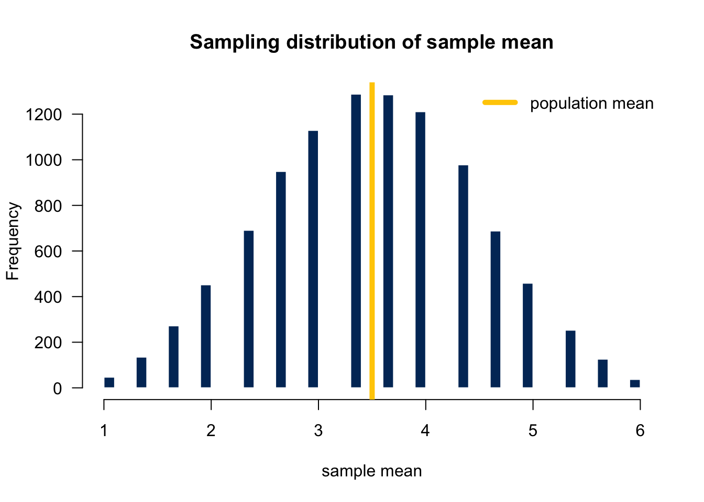

11 Sampling Distribution
When we do statistical inference, we assume each data point in the sample is drawn from the target population whose characteristic we focus is assumed to follow some probability distribution that is unknown to us. For example, suppose we would like to do inference about Marquette students’ mean height. We assume the student height follows a normal distribution \(N(\mu, \sigma^2)\) with \(\mu\) being unknown to us (\(\mu\) is what we would like to infer for). We collect our sample data, and assume each data point comes from the assumed distribution \(N(\mu, \sigma^2)\).
The sampling distribution is an important concept that connects probability and statistics together. We use the sampling distribution quite often, at least at the introductory level, to do statistical inference, and that’s why we need to learn what it is before doing statistical inference.
11.1 Introduction
Parameter
Parameters in a probability distribution are the values describing the entire distribution. For example,
- Binomial: two parameters, \(n\) and \(\pi\)
- Poisson: one parameter, \(\lambda\)
- Normal: two parameters, \(\mu\) and \(\sigma\)
As long as we know the values of the parameters of some distribution, we are able to calculate any probability of the distribution, and describe the distribution exactly. The entire distribution is controlled solely by the few parameters.
In statistics, we usually assume our target population follows some distribution, but its parameters are unknown to us. For example, we may assume human weight follows \(N(\mu, \sigma^2)\) although we are not quite sure what its mean and/or variance is. We may think the number of snowstorms in one year in the US follows \(Poisson(\lambda)\) although we have no idea of the mean number of occurrences.


Treat Each Data Point as a Random Variable
A statistical data analysis more or less involves some probability. How do we bring probability into the analysis? How is the data related to probability? Here we are going to learn some insight about it. Suppose in order to do a data analysis and inference about some population characteristic, the population mean for example, we collect a sample data of size \(n\), a data set having \(n\) data points or values.
Here is how the probability comes into play. First, we assume the target population follows some probability distribution, say \(N(\mu, \sigma^2)\). Then we treat each data point as a random variable whose realized value, the value shown in our collected data set, is drawn from the population distribution.
Take Marquette students weight for example. Suppose the weight follows \(N(\mu, \sigma^2)\). Suppose we decide to collect ten data points, so \(n = 10\). Now before we actually collect the data, the ten data points are all random variables that follow \(N(\mu, \sigma^2)\). If we write the ten variables as \(X_1\), \(X_2, \dots, X_{10}\), then we have \(X_i \sim N(\mu, \sigma^2), i = 1, 2, \dots, 10.\) Notice that \(X_1, X_2, \dots, X_{10}\) all follow the same distribution because they all come from the same population. Now, after we collect our data, we have the realized value of those ten random variables. For example, out data set may look like
134 110 177 183 144 150 95 200 145 189So the realized value of \(X_1\) is 134, the realized value of \(X_2\) is 110, and so on. Each data value is drawn from the population.

Then we call such sample data \((X_1, X_2, \dots, X_n)\) a random sample of size \(n\) from the population.
- Before we actually collect the data, the data \(X_1, X_2, \dots, X_n\) are random variables from the population distribution \(N(\mu, \sigma^2)\).
- Once we collect the data, we know the realized value of these random variables: \(x_1, x_2, \dots, x_n\).
11.2 Sampling Distribution
Any value computed from a sample \((X_1, X_2, \dots, X_n)\) is called a (sample) statistic.
- The sample mean \(\frac{1}{n}\sum_{i=1}^n X_i\) is a statistic.
- Sample variance \(\frac{\sum_{i=1}^n \left(X_i - \overline{X}\right)^2}{n-1}\) is also a statistic.
Since \(X_1, X_2, \dots, X_n\) are random variables, any transformation or function of \((X_1, X_2, \dots, X_n)\) or its statistics is also a random variable. The probability distribution of a statistic is called the sampling distribution of that statistic. It is the probability distribution of that statistic if we were to repeatedly draw samples of the same size from the population.
Sampling Distribution of Sample Mean
Since \(X_1, X_2, \dots, X_n\) are random, if we repeat the sampling couple of times, every time we will be getting different realized values.
The following table shows 5 replicates of sample data of size 10. The first data set has 10 realized values 117 169 111 190 98 94 127 105 93 187. If we were to collect another data set, the first realized value of \(X_1\) could be any other number from the population, not necessarily to be 117 because again \(X_1\) is a random variable. In our example \(x_1 = 192\) in the second data set. The idea applies to \(X_2\) to \(X_{10}\). Now because every time we collect a new data set we get different realized values \(x_1, x_2, \dots, x_{10}\), the realized value of sample mean will vary from sample to sample as well. The first data set gets the sample mean 129.1, the second one 153.2, and so on. This shows why the sample mean is random by nature, and its value varies according to a distribution that is its sampling distribution.
x1 x2 x3 x4 x5 x6 x7 x8 x9 x10 mean
Dataset-1 117 169 111 190 98 94 127 105 93 187 129.1
Dataset-2 192 175 179 159 168 167 103 145 151 93 153.2
Dataset-3 93 110 129 173 145 156 189 184 182 94 145.5
Dataset-4 155 136 129 173 137 92 176 130 189 161 147.8
Dataset-5 121 131 132 91 168 143 138 191 145 140 140.0Figure 11.2 illustrates how we collect the sample of sample means that represents its sampling distribution. In short, if we were able to collect lots of samples of size \(n\), and get the sample mean for each sample of size \(n\), the histogram of those sample means gives us a pretty good understanding of what the sampling distribution of the sample mean looks like.

The following histogram shows the sampling distribution of the sample mean for the sample of size 10 when the sampling are repeated 1000 times. That is, we have 1000 \(\overline{x}\)s, each being computed from \(\frac{1}{10}\sum_{i=1}^{10}x_{i}\).

The concept is a little abstract, and you may need time to digest it. The applet Sampling Distribution Applet provides animation of how the sampling distribution is formed. I highly recommend that you play with it, and figure out the entire building process.
This is an important question. So far we know each data point or random variable \(X_i, i = 1, \dots, n\) is drawn from the population distribution. The sample mean \(\overline{X}\) is also a random variable following its sampling distribution. Fo r any population distribution, not necessarily normal, \(\overline{X}\) has the following two properties:
- The sample mean \((\overline{X})\) is less variable than an individual observation \(X_i\). Although \(\overline{X}\) and \(X_i\) are both random variables, the sampling distribution of \(\overline{X}\) has smaller variance than \(X_i\). Intuitively, \(\overline{X}\) is the average of bunch of \(X_i\)s. Averaging is washing the extreme values out, resulting in values similar to each other.
data 1: 30 40 50 60 70data 2: 0 5 50 95 100data 3: 0 5 10 15 220The three data sets all have \(x_1, \dots, x_5\). Clearly, \(X_i\) could generate pretty small or large values. However, when all five \(x_1, \dots, x_5\) are averaged, the extreme values are combined together, moving toward to some value in between. In this example, all three data sets have the sample mean \(50\) with even no variation at all. The sample mean is much more stable than individual \(X_i\), especially when the sample size \(n\) is large.
- The sample mean \((\overline{X})\) is more normal than an individual observation \(X_i\).
The population distribution \(X_i\) is drawn from is not necessarily a normal distribution, and it can be any distribution that is not bell-shaped or not unimodal. However, the sampling distribution will always look more like a normal distribution than the assumed population distribution. This sounds unreal, but it is true. The important central limit theorem proves this, and we will talk about it in Chapter 12.
Suppose \((X_1, \dots, X_n)\) is the random sample from a population distribution with mean \(\mu\), and standard deviation \(\sigma\). Can we know the mean and variance of the sampling distribution of the sample mean \(\overline{X} = \frac{\sum_{i=1}^nX_i}{n}\), denoted by \(\mu_{\overline{X}}\) and \(\sigma_{\overline{X}}\) respectively? The answer is yes. In fact,
\(\mu_{\overline{X}} = \mu\) . The mean of \(\mu_{\overline{X}}\) is equal to the population mean \(\mu\), i.e., \(E(\overline{X}) = \mu\).
\(\sigma_{\overline{X}} = \frac{\sigma}{\sqrt{n}}\) . The standard deviation of \(\overline{X}\) is not equal to the population standard deviation \(\sigma\). It is actually \(\frac{\sigma}{\sqrt{n}}\) that is smaller than \(\sigma\). This is consistent with the property that \(\overline{X}\) is less variable than an individual variable \(X_i\) we learned before. Notice that the variation of \(\overline{X}\) is getting smaller as the sample size \(n\) get large. \(\sigma_{\overline{X}}\) is also known as the standard error of \(\overline{X}\).
If the population distribution is \(N(\mu, \sigma^2)\) , then the sampling distribution of \(\overline{X}\) is also normally distributed: \(N\left(\mu, \frac{\sigma^2}{n} \right)\) .
Figure 11.3 depicts that the sampling distributions of the sample mean are less variable than the population distribution (black colored). As the sample size \(n\) increases from 2 (red), 4 (blue), to 8 (green), its corresponding sampling distribution is getting less variable, with smaller chance to have extreme values. Since the population distribution is normally distributed, so is the sampling distribution. The population distribution and the sampling distribution have the same mean, both centered at one.
Example: Rolling a Die
Let’s see how we get a sampling distribution through an example. Suppose one rolls a fair die 3 times 🎲🎲 🎲 independently to obtain 3 values from the “population” \(\{1, 2, 3, 4, 5, 6\}\). Well if we let \(X_i, i = 1, 2, 3\) be the number showing up for the \(i\)th roll, then each \(X_i\) follows the discrete uniform distribution \(P(X_i = 1) = P(X_i = 2) = \cdots = P(X_i = 6) = 1/6\) because \(X_i\) is a discrete random variable and a fair die is rolled. The population mean is \((1+2+3+4+5+6)/6 = 3.5.\) Figure 11.4 shows the population distribution.
To obtain the sampling distribution of the sample mean, we first repeat the process 10,000 times, and get 10,000 corresponding sample means.
x1 x2 x3 mean
Dataset-1 6 3 2 3.666667
Dataset-2 4 2 5 3.666667
Dataset-3 3 2 6 3.666667. . . . . . x1 x2 x3 mean
Dataset-9998 5 4 6 5.000000
Dataset-9999 4 1 1 2.000000
Dataset-10000 4 6 1 3.666667Then plot the histogram of those sampling means. Figure 11.5 shows the histogram of those 10000 sample means which can be treated as the sampling distribution of the sample mean. What do we see from the plots? First, since the population distribution is discrete, so is the sampling distribution. Second, both have the identical mean 3.5. 1 Third, the sampling distribution look more like a normal distribution.


11.3 Standardization of Sample Mean
Any random variable can be standardized. For a single random variable \(X \sim N(\mu, \sigma^2)\), we have \(Z = \frac{X - \mu}{\sigma} \sim N(0, 1)\). For the sample mean of \(n\) variables, we know \(\overline{X} \sim N(\mu_{\overline{X}}, \sigma^2_{\overline{X}}) = N(\mu, \frac{\sigma^2}{n})\). To standardize \(\overline{X}\), and make a new standard normal variable from it, we just subtract it from its own mean and divided by it own standard deviation:
\[Z = \frac{\overline{X} - \mu_{\overline{X}}}{\sigma_{\overline{X}}} = \frac{\overline{X} - \mu}{\sigma/\sqrt{n}} \sim N(0, 1)\]
Again, since \(\overline{X}\) is a random variable, its transformation is also a random variable. \(\frac{\overline{X} - \mu}{\sigma/\sqrt{n}}\) is a standard normal variable.
Example: Psychomotor Retardation
Suppose psychomotor retardation scores for a group of patients have a normal distribution with a mean of 930 and a standard deviation of 130.
- What is the probability that the mean retardation score of a random sample of 20 patients was between 900 and 960?

First, from the question assume that \((X_1, \dots, X_{20})\) forms a random sample, and \(X_1, \dots, X_{20} \stackrel{iid}{\sim} N(930, 130^2)\). Then \(\overline{X} = \frac{\sum_{i=1}^{20}X_i}{20} \sim N\left(930, \frac{130^2}{20} \right)\).
What we want to compute is \(P(900 < \overline{X} < 960)\). We can first standardize \(\overline{X}\) and represent the probability using standard normal \(Z\): \[\small \begin{align} P(900 < \overline{X} < 960) &= P\left( \frac{900-930}{130/\sqrt{20}} < \frac{\overline{X}-930}{130/\sqrt{20}} < \frac{960-930}{130/\sqrt{20}}\right)=P(-1.03 < Z < 1.03)\\ &=P(Z < 1.03) - P(Z < -1.03) \end{align}\]
Finally we just need to find \(P(Z < 1.03)\) and \(P(Z < -1.03)\) using R:
If we don’t do standardization, remember to use values in the original scale, and specify the mean and standard deviation. Keep in mind the standard deviation is \(\sigma_{\overline{X}} = 130/\sqrt{20}\), not \(130\).
## P(Xbar < 960) - P(Xbar < 900)
pnorm(960, mean = 930, sd = 130/sqrt(20)) -
pnorm(900, mean = 930, sd = 130/sqrt(20))[1] 0.6979426The probability that the mean psychomotor retardation score of a random sample of 20 patients is between 900 and 960 is about 70%.
11.4 Exercises
- Head lengths of Virginia possums follow a normal distribution with mean 104 mm and standard deviation 6 mm.
- What is the sampling distribution of the sample mean of the head length when the sample size \(n = 18\)?
- Assume that females have pulse rates that are normally distributed with a mean of 76.0 beats per minute and a standard deviation of 11.5 beats per minute.
- If 1 adult female is randomly selected, find the probability that her pulse rate is less than 81 beats per minute.
- If 18 adult female are randomly selected, find the probability that their mean pulse rate is less than 81 beats per minute.
The average or the empirical mean of those 10000 \(\overline{x}\)s would not be exactly equal to, but very close to the population mean 3.5. In fact, the average is 3.5001. As we discussed, theoretically it is true that \(E(\overline{X}) = \mu = 3.5\).↩︎